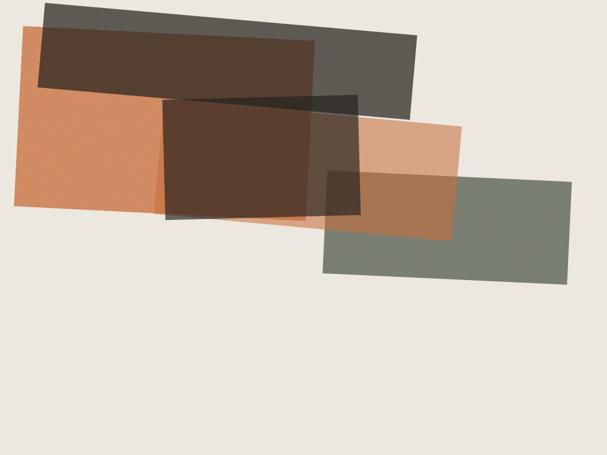
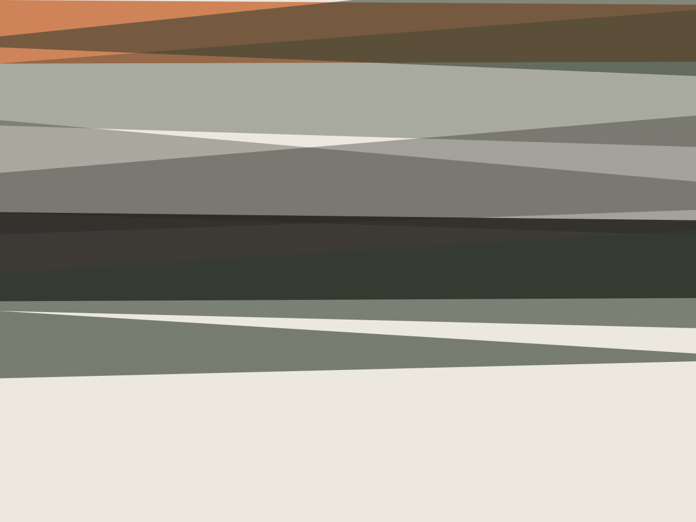
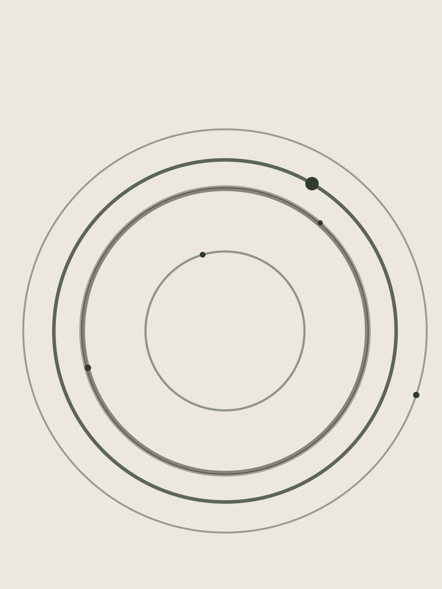

Redação para o Enem · Vila Madalena e online
A nota da redação sai por competência
Vinte e quatro semanas, uma redação por semana, devolutiva em 72 horas com nota nas cinco competências e o parágrafo que puxou a nota para baixo marcado no papel. Turma de 14, duas corretoras.
- Duração
- 24 semanas
- Redações
- 24 corrigidas
- Turma
- 14 alunos
- Curso
- R$ 4.800
O que acontece em cada bloco de semanas
O curso não é uma sequência de dicas. Cada bloco fecha com uma redação completa, corrigida nas cinco competências, e o tema seguinte só começa quando a turma recebeu a devolutiva do anterior.
-
Semanas 1 a 4 — a estrutura que a banca espera
Introdução com tese explícita, dois parágrafos de desenvolvimento e conclusão com proposta. Nessa fase a redação é curta de propósito: quatro parágrafos, sem repertório externo, para o esqueleto ficar de pé.
-
Semanas 5 a 10 — repertório que se sustenta
Doze repertórios catalogados por eixo temático: Constituição, dados do IBGE, duas obras literárias, um documentário e três casos de política pública. Cada um entra com a frase de ligação pronta, porque repertório sem ligação não pontua em C2.
-
Semanas 11 a 18 — temas por eixo
Saúde pública, tecnologia e trabalho, meio ambiente, educação, mobilidade urbana. Um eixo por semana e meio, com a leitura de dois textos motivadores de provas anteriores antes da escrita.
-
Semanas 19 a 24 — simulado com tema inédito
Cinco horas e meia de prova, tema que ninguém viu, no mesmo formato do primeiro dia do Enem. A última semana é de reescrita: cada aluno reescreve a pior redação do curso inteiro.
Ninguém perde 200 pontos de uma vez. Perde 40 em cada competência, em quatro redações seguidas, e só descobre isso quando alguém mostra o papel. Renata Salles, corretora responsável pelo curso
As cinco competências, com o que derruba cada uma
Cada competência vale 200 pontos. A nota final é a soma das cinco, e é assim que a devolutiva é entregue — nunca um número solto.
| Comp. | O que é avaliado | O que mais derruba | Pontos |
|---|---|---|---|
| C1 | Domínio da norma padrão | Concordância com sujeito distante e crase antes de verbo | 200 |
| C2 | Compreensão do tema e repertório | Repertório citado sem ligação com a tese; fuga parcial do recorte | 200 |
| C3 | Seleção e organização dos argumentos | Dois parágrafos que dizem a mesma coisa com palavras diferentes | 200 |
| C4 | Coesão e recursos conectivos | “Além disso” três vezes no mesmo texto e parágrafo sem retomada | 200 |
| C5 | Proposta de intervenção | Falta agente, meio ou finalidade — os três têm de estar escritos | 200 |
Tabela montada a partir dos critérios publicados pelo Inep para a prova de redação. O curso não tem acesso a nota oficial de aluno nenhum.
Como uma correção volta para o aluno
O texto volta com marcações no papel — ou no PDF, com as mesmas marcas — e um áudio de seis minutos explicando cada uma. Depois vem a nota por competência.
A ausência de saneamento básico em áreas periféricas não é um problema somente C4: “somente” é muleta, não conectivo de infraestrutura, mas de saúde pública.
Segundo o IBGE, 33 milhões de brasileiros vivem sem coleta de esgoto. C2: repertório com fonte, bom Esse número sustenta a tese do primeiro parágrafo.
Portanto, cabe ao Ministério da Saúde ampliar a rede, C5: falta o meio — verba, prazo ou parceria para reduzir internações por doenças de veiculação hídrica.
- C1 200 — sem desvios
- C2 160 — repertório bom, recorte do tema parcial
- C3 160 — o segundo argumento repete o primeiro
- C4 120 — dois conectivos repetidos
- C5 120 — proposta incompleta
Total: 760
Cinco correções do último semestre
Trechos anonimizados de redações de alunos, com a competência que decidiu a nota. Nenhuma delas é de prova oficial.



Quem corrige as 24 redações
Renata Salles corrige redação desde 2013 — seis anos em banca de cursinho, cinco em curso próprio. Formada em Letras pela USP, com mestrado em linguística textual.
A partir da turma de agosto, Júlia Barbosa divide a correção. São duas leitoras por redação: uma dá a nota, a outra revisa a nota antes de a devolutiva sair. Divergência acima de 80 pontos volta para leitura conjunta.
- Redações corrigidas
- por semana, no curso inteiro
- Prazo
- 72 horas, sem exceção
- Áudio
- 6 minutos por devolutiva
- Eu achava que meu problema era falta de repertório. A correção mostrou que era C4: eu repetia “dessa forma” em todo parágrafo e ninguém nunca tinha me dito isso. Beatriz Camargo, turma de fevereiro, prestou o Enem de 2024
- O áudio de seis minutos é o que faz diferença. Ler “melhore a coesão” não ajuda; ouvir “olha o terceiro parágrafo, você não retomou o sujeito” ajuda. Otávio Ferraz, turma de agosto, terceiro ano do médio
R$ 4.800 pelo curso inteiro
Em seis parcelas de R$ 860, ou à vista com 5% de desconto. Inclui as 24 correções, os encontros de sábado e o simulado final.
Não existe plano só de correção avulsa para quem não é aluno. Para isso, a escola mantém a correção de uma redação isolada, com prazo de cinco dias úteis.
- Curso completo24 semanas, 24 redações corrigidasR$ 4.800
- Matrículauma vez, no ato da inscriçãoR$ 240
- Correção avulsa de uma redaçãopara quem não é aluno, 5 dias úteisR$ 180
- Reescrita extraalém das 24 do cursoR$ 90
- Aula presencialsábado, 9h às 12h, Vila Madalenainclusa
- Encontro onlineterça, 20h, ao vivoincluso
Turma de agosto · 14 vagas
Rua Fradique Coutinho, 1180 — Vila Madalena
A inscrição é uma redação de 30 linhas sobre um tema sorteado, escrita em casa em até 90 minutos, e uma conversa de 20 minutos com a Renata. A redação não elimina ninguém: ela define em qual bloco de semanas você entra.
Sábado, 9h às 12h (presencial) · Terça, 20h (online) · Secretaria seg a sex, 10h às 19h